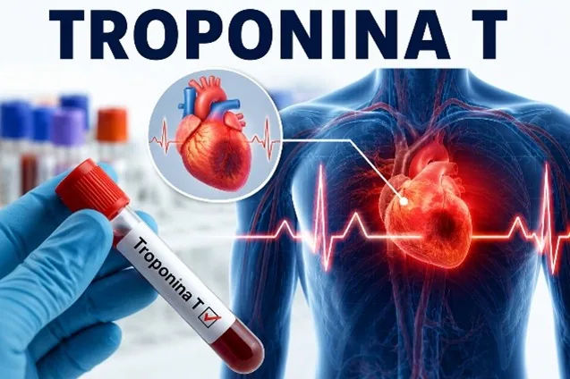

Troponina T
La troponina T es una proteína que forma parte de las fibras del músculo cardíaco y participa en el proceso de contracción del corazón; cuando las células del miocardio sufren una lesión, como ocurre durante un infarto agudo de miocardio, esta proteína se libera al torrente sanguíneo. Debido a su alta sensibilidad y especificidad, es uno de los biomarcadores más utilizados para detectar daño cardíaco.
¿Qué evalúa?
Intervenciones de Enfermería
Antes
Antes de obtener la muestra de sangre, verifica la identidad del paciente, explica el procedimiento para disminuir la ansiedad, revisa la orden médica y registra la hora de inicio del dolor torácico o de los síntomas. Además, prepara el material necesario y confirma si el paciente consume suplementos de biotina, ya que pueden interferir con algunos métodos de medición.
Durante
Se realiza la extracción de sangre utilizando técnica aséptica, se identifica correctamente la muestra y se vigila el estado clínico del paciente, observando signos vitales, dolor torácico, dificultad respiratoria o alteraciones del ritmo cardíaco.
Después
Se comprime el sitio de punción para evitar hematomas, se envía la muestra inmediatamente al laboratorio y se continúa la monitorización del paciente, registrando cualquier cambio clínico y colaborando con el equipo médico según los resultados obtenidos.